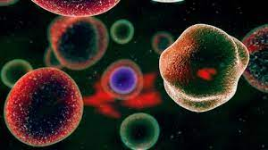

Células Tronco
Entenda melhor sobre o uso desses tipos de células
O que são as células tronco?
As células-tronco se apresentam como uma fonte potencialmente ilimitada de tecidos para transplante. Células-tronco, podem ser definidas como células com grande capacidade de proliferação e auto renovação, com capacidade de responder a estímulos externos e dar origem a diferentes linhagens celulares mais especializadas.
Como surgiram e para que servem?
Ao longo dos anos, diversos órgãos e tecidos do corpo humano perdem progressivamente sua capacidade de funcionamento, seja por causa de alguma doença ou pelo processo normal de envelhecimento. Há então uma grande demanda de reposição desses órgãos, que hoje em dia é atendida por programas de transplante de órgãos. No entanto, por várias razões, esses programas de transplante de órgãos atendem a uma fração muito pequena dos pacientes, seja por escassez de doadores ou pela atual incapacidade de transplante de certos órgãos ou tecidos, como muscular e nervoso. Estas células poderiam ser multiplicadas no laboratório e induzidas a formar tipos celulares específicos que, quando transplantados, regenerariam o órgão doente.
Tipos de células tronco
As células troncos embrionárias são as células chamadas de pluripotentes, pois têm a capacidade de se transformar em qualquer tipo de célula adulta. São encontradas no interior do embrião, quando ele está no estágio conhecido como blastocisto (4 a 5 dias após a fecundação). Embora o estágio embrionário tenha duração de várias semanas, só são consideradas células-tronco embrionárias estas com 4 a 5 dias de gestação. Depois dessa fase o embrião já apresenta células especializadas. As células embrionárias podem se transformar em qualquer célula do corpo.

As células-tronco adultas são células obtidas, principalmente, na medula óssea e no sangue do cordão umbilical, mas cada órgão do nosso corpo possui uma quantidade de células-tronco que é responsável pela renovação das nossas células ao longo da vida. Elas têm capacidade de se dividir e gerar tanto uma nova célula idêntica e com o mesmo potencial, como outra diferenciada. São chamadas de multipotentes por serem menos versáteis que as células-tronco embrionárias
As células-tronco induzidas inicialmente foram produzidas em laboratório em 2006 por um pesquisador japonês chamado Shynia Yamanaka. Na ocasião, foram reprogramadas células da cauda de um camundongo e estas voltaram a se comportar como células-tronco embrionárias. Posteriormente, em 2007, foram produzidas as primeiras células induzidas humanas, a partir da pele. Esta tem sido até então a principal fonte de células para reprogramação, mas teoricamente, qualquer tecido do corpo pode ser reprogramado.
O porque de usar células troncos para tratamentos medicinais?
Ao serem transplantadas para o organismo do paciente, as células-tronco podem substituir as células doentes, que se continuarem no corpo humano, possibilitam o desenvolvimento de infecções, hemorragias ou problemas em órgãos devido à diminuição dos níveis sanguíneos. No entanto, o transplante de células-tronco só é recomendado com a indicação de especialistas e em casos específicos em que o uso de radiação é constante e não pode ser administrada em altas doses, para não causar danos à medula óssea e as de células sanguíneas.
Doenças que podem ser tratadas com células tronco
Doenças metabólicas: obesidade, diabetes, doenças hepáticas, leucodistrofia metacromática, síndrome de Günther, adrenoleucodistrofia, doença de Krabbe e síndrome de Niemann Pick. Imunodeficiência: como hipogamaglobulinemia, artrite reumatoide, doença granulomatosa crônica e síndrome linfoproliferativa ligada ao cromossomo X. Hemoglobinopatias: são doenças relacionadas à hemoglobina, como talassemia e anemia falciforme; Deficiências relacionadas à medula óssea: que é o local em que as células tronco são produzidas, como anemia aplásica, doença de Fanconi, anemia sideroblástica, síndrome de Evans, hemoglobinúria paroxística noturna, dermatomiosite juvenil, xantogranuloma juvenil e doença de Glanzmann, por exemplo. Doenças oncológicas: como leucemia linfoblástica aguda, leucemia mieloide crônica, doença de Hodgkin, mielofibrose, leucemia mieloide aguda e tumores sólidos, por exemplo. Além dessas doenças, o tratamento com células tronco também pode ser benéfico em caso de osteoporose, doenças cardíacas, Alzheimer, Parkinson, displasia do timo, traumatismo craniano e anoxia cerebral e entre outras.
Como funciona o transplante?
Os pacientes que são submetidos ao transplante de células-tronco não passam por uma cirurgia. Antes do procedimento, as células formadoras de sangue são coletadas e enviadas para um compartimento, onde são congeladas. Quando prontas para uso, as células-tronco são aplicadas na veia, como uma transfusão de sangue, e se instalam na medula óssea do paciente para começarem a produzir células sanguíneas e renovar as do sistema imunológico.
Conheça alguns fatos curiosos sobre essas incríveis células que podem salvar vidas
Renovação constante diferente de outras células do corpo, como as células musculares, do sangue ou do cérebro, que normalmente não se reproduzem, células-tronco podem se replicar várias vezes. Isso significa que a partir de uma cultura de células-tronco é possível produzir milhares. Os pesquisadores ainda não sabem exatamente como induzir a proliferação e autor renovação dessas estruturas, mas elas fazem esse trabalho muito bem sozinhas. Graças às células-tronco, você ganha uma nova pele aproximadamente a cada quatro semanas, um novo intestino todos os dias, e incríveis 2 milhões de novos glóbulos vermelhos a cada segundo.
Povoação ou lotação
Pesquisadores descobriram células-tronco na polpa dentária de dentes humanos em 2000. Conforme o tempo passa, nós continuamos a encontrá-las em diversas partes do corpo. Existem vários tipos de células-tronco. Elas podem ser classificadas em totipotentes, quando conseguem se diferenciar em todos os tecidos do corpo humano; pluripotentes ou multipotentes, quando são capazes de se transformar em quase todos os tecidos, exceto placenta e anexos embrionários; oligotentes, quando podem se diferenciar em poucos tecidos; e onipotentes, quando podem se transformar em um único tecido. Essas estruturas basicamente podem ser divididas, de acordo com a origem, em células-tronco derivadas de tecidos embrionários (somáticas) e células-tronco derivadas de tecidos não embrionários (adultas). Células-tronco pluripotentes poderiam, teoricamente, derivar de qualquer célula humana. Já as células-tronco embrionárias se formam no interior do blastocisto, um aglomerado celular que dá origem a tecidos e órgãos necessários ao desenvolvimento do feto. A maioria das pesquisas utiliza este tipo de célula para produzir mais células-tronco (o objetivo é dividi-las em laboratório e estimulá-las para se tornarem tecidos especializados). Outro tipo bastante utilizado em pesquisas são células-tronco pluripotentes induzidas, células adultas que foram geneticamente reprogramadas para o estágio de células-tronco embrionárias. No momento, a técnica está sendo analisada para ver se poderia ser utilizada de forma segura em seres humanos. Alguns especialistas acreditam que células-tronco existem possivelmente em quase todo o tipo de tecido. Já foram encontradas células embrionárias no cordão umbilical, na medula óssea, no sangue, no fígado, na placenta e no líquido amniótico.
Regeneração possível
O carbono-14 produzido pelos testes de bomba nuclear da Guerra Fria possibilitou que pesquisadores determinassem que o nosso coração pode se regenerar (muito lentamente), graças às células-tronco. O estudo, publicado em 2009 na revista Science, conseguiu estabelecer a idade de músculos cardíacos por meio de técnicas de datação por incorporação de carbono-14 ao DNA de pessoas expostas à radioatividade. Os cientistas suecos constataram que os músculos cardíacos humanos apresentam capacidade de renovação anual de 1% a 2% nas primeiras décadas de vida, e de 0,45% a partir da quarta década, em que a probabilidade de um infarto do miocárdio é maior. As taxas de renovação indicaram que cerca de 50% das células dos músculos cardíacos humanos são substituídas ao longo de toda a vida de uma pessoa com 70 anos. Isso deu esperanças para uma das terapias mais esperadas com células-tronco: a reparação cardíaca. A utilização de células-tronco adultas da medula óssea, ou de células derivadas do tecido adiposo, ou até de células adultas geneticamente modificadas para estimular a formação de novos vasos vem sendo constantemente estudada.
Pele por demanda
Outra área de pesquisa com células-tronco tem a ver com sua utilização para crescer “camadas” inteiras de epiderme em laboratório, apenas sem pelos ou glândulas sudoríparas. Esta “pele criada” pode ser utilizada como enxerto para pacientes com queimaduras graves. Alguns anos atrás, pesquisadores inventaram uma “pistola” que funciona usando células-tronco saudáveis da pele do próprio paciente, misturadas com uma solução que possibilita um efeito de spray. Esse spray ajuda a regenerar o local danificado. O dispositivo tratou com sucesso mais de uma dezena de vítimas de queimaduras. Outros estudos também conseguiram provar que células-tronco podem ajudar a recuperar a visão. A Universidade de Oxford (Reino Unido) usou o transplante de células estaminais em desenvolvimento nos olhos de ratos cegos, ajudando-os a formar novamente uma camada sensível à luz na retina e, portanto, enxergar de novo.
Transplantes salvadores
Nos últimos 20 anos, mais de 20.000 pacientes receberam transplantes de sangue do cordão umbilical, em sua maior parte para tratar distúrbios do sangue, como leucemia, em crianças. As terapias na área estão ficando cada vez melhores, e se provando cada vez mais eficazes. Há pouco tempo, pesquisadores da Universidade de Cambridge (Reino Unido) desenvolveram uma nova técnica para a obtenção de células-tronco a partir do próprio sangue dos pacientes. Consideradas uma das maiores promessas da medicina regenerativa, já que podem ser convertidas em qualquer tipo de célula existente no organismo, as células-tronco são potencialmente úteis em terapias de combate a doenças cardiovasculares, neurodegenerativas, diabetes mellitus do tipo 1, acidentes vasculares cerebrais, doenças hematológicas diversas, traumas na medula espinhal etc. Elas são encontradas em células embrionárias, na placenta, no líquido amniótico, no cordão umbilical e em vários locais do corpo, como na medula óssea, no sangue e no fígado. No passado, as principais questões levantadas pela sua utilização se relacionavam com o fato de que algumas de suas fontes de obtenção (como embriões humanos) são consideradas controversas do ponto de vista ético. Também, como a fonte provém de outro organismo, o material obtido está sujeito à rejeição, de forma análoga ao que pode ocorrer com o transplante de órgãos. A nova técnica promete resolver ambas essas questões: além de possibilitar que células-tronco sejam obtidas diretamente do sangue do paciente, sem a necessidade da utilização de embriões humanos, diminui o risco de rejeição, já que o material vem do próprio organismo do beneficiado.